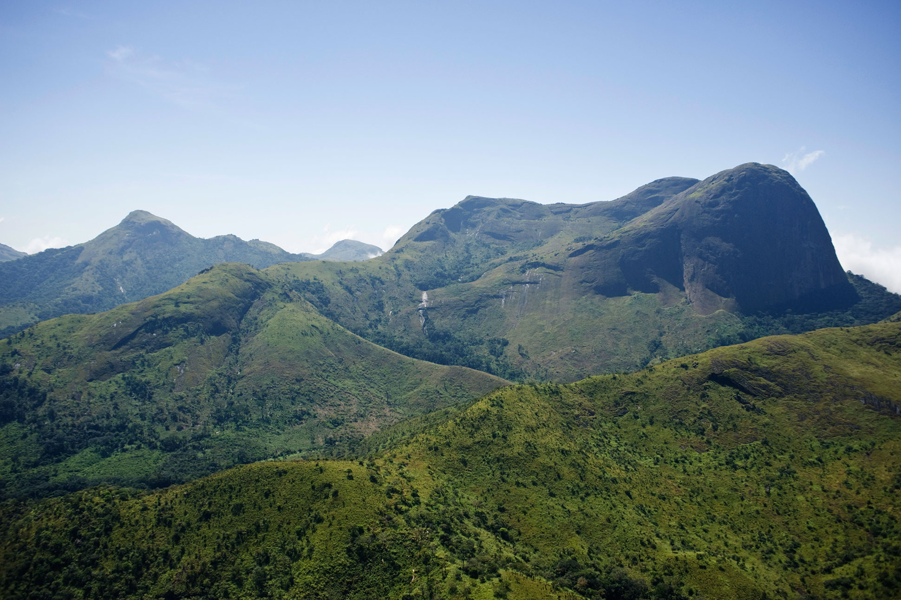
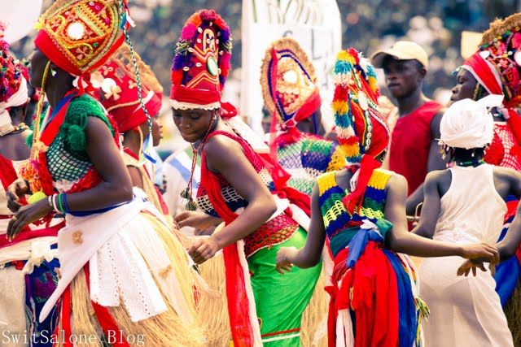
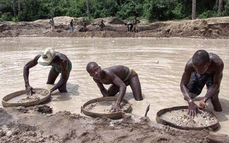
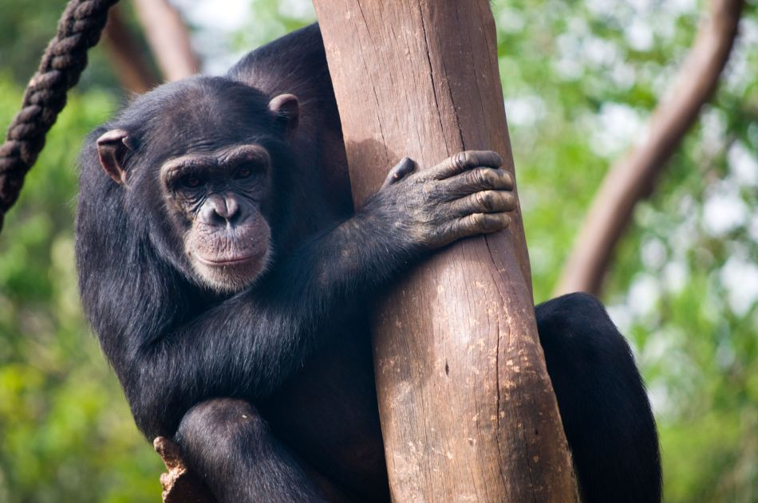
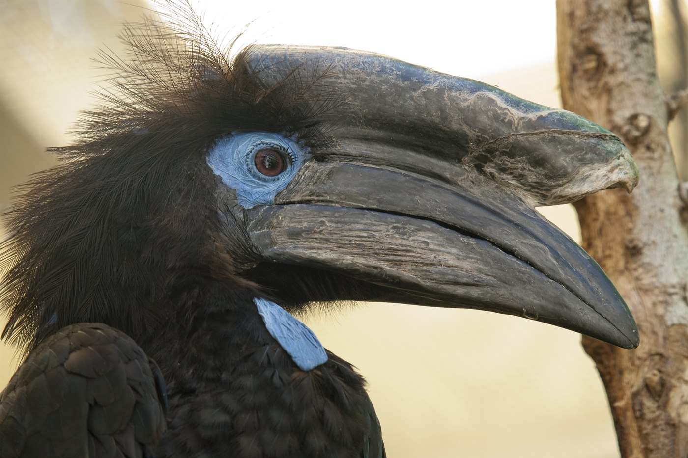

Tabbed Image Gallery
I will explain the history of my country Sierra Leone using the image galary
Click on the images below:

Sierra Leone was "discovered" by the Europeans when a Portuguese expedition headed by Bartolomeu Dias in the late 1480s ventured down along the African coast.
Portuguese voyagers gave the name Serra Lyoa (Lion Mountains), later changed to Sierra Leone by the British.

The Sierra Leone Civil War (1991–2002) was a civil war in Sierra Leone that began on 23 March 1991
when the Revolutionary United Front (RUF),
with support from the special forces of Charles Taylor’s National Patriotic Front of Liberia (NPFL).
this affect the country up to this day. children as low as 8 years were recruited as rebels.

Sierra Leone has a completely different topography. With fewer higher mountains, this region is overwhelmed with tropical rain forests the likes of the Amazon.
This evergreen region is rich in biodiversity.

In Sierra Leone female mutilation is called “Bondo Society” – What usually happen is young girls,
mostly in their puberty stage are taken to a secret place in an enclosed hut or house somewhere
(bush) in the village/town/city which looked like a fenced forest, locally called “Bondo Bush

diamond exploration and mining operations in Sierra Leone are the mejor activities.
Meet our people at work and in our community, and follow our progress as we demonstrate that responsible and
sustainable diamond mining

The wildlife of Sierra Leone is very diverse due to the variety of different habitats within the country.
Sierra Leone is home to approximately 2090 known higher plant species, 147 known species of mammals,
172 known breeding bird species, 67 known reptile species,
35 known amphibian species and 99 known speciesof fish

Around the globe, Sierra Leone is eminent for its delightful beach shorelines.
There are a beautiful part of shorelines in Sierra Leone and the vast majority of them are neat and serene.
Sea Beach shorelines are abundant as well as of a generally high caliber
and it brags a portion of the best shorelines on the planet

Eagles, They are found worldwide in the Tropics.
They are identifiable by their huge feet and claws which enable them to walk on floating
vegetation in the shallow lakes that are their preferred habitat.